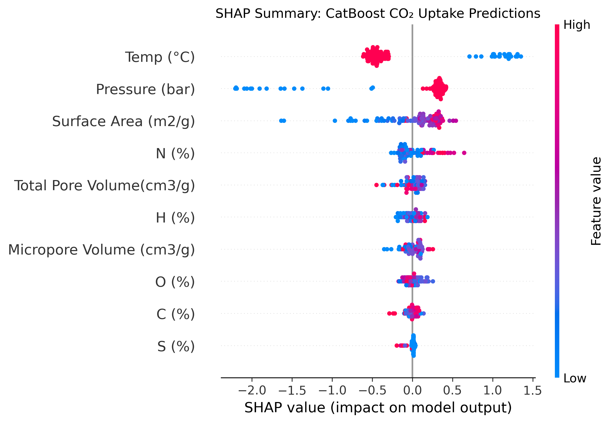
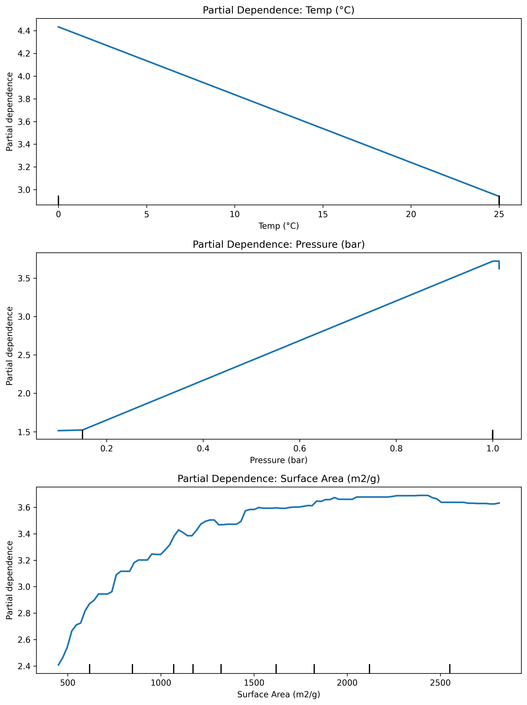
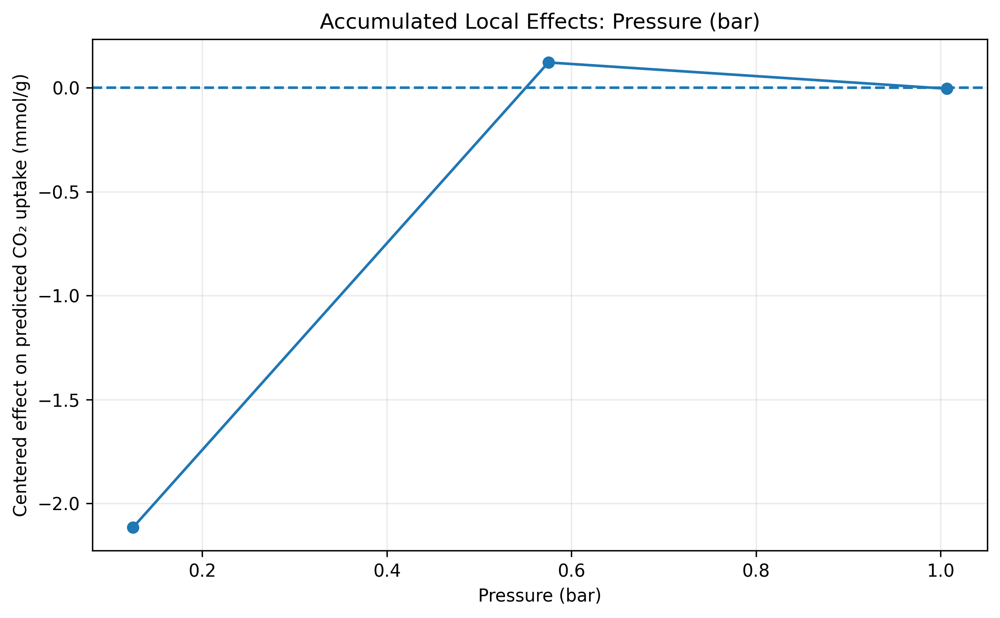
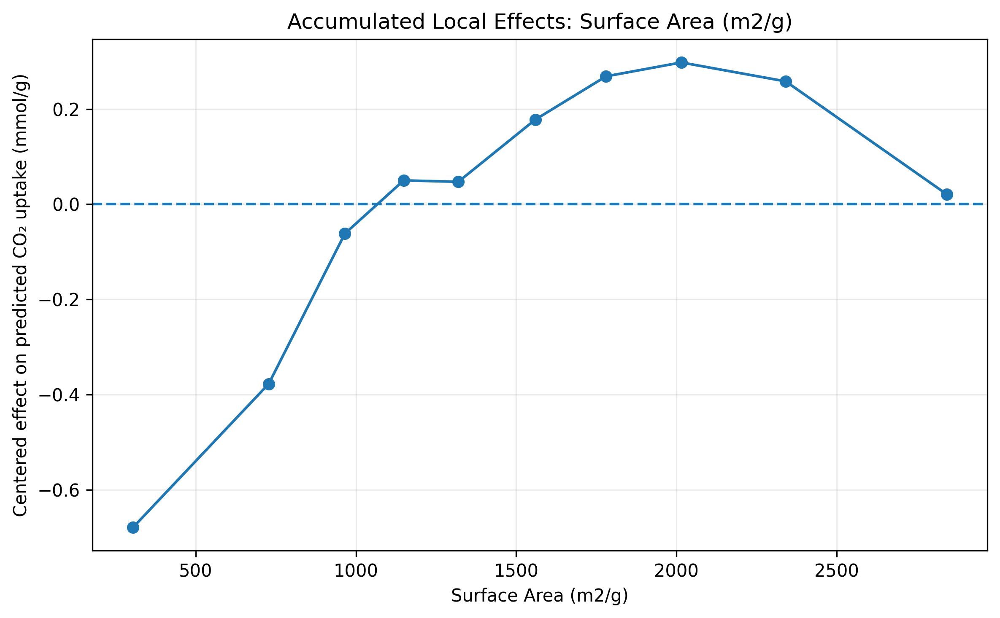

INTERPRETABLE MACHINE LEARNING
Model Explainability & Feature Effects
Deconstructing model predictions using cooperative game theory (SHAP), Partial Dependence (PDP), and Accumulated Local Effects (ALE) to verify chemical and thermodynamic consistency.
SHAP values and Partial Dependence curves quantify statistical feature importance and learned marginal associations within the empirical dataset. They provide crucial interpretability into model behavior, but they do not constitute proof of causal mechanisms.
Global Feature Ranking (Mean |SHAP|)
CatBoost BenchmarkAverage absolute impact of each feature on CO₂ uptake across all test samples:
| Rank | Feature Name | Mean |SHAP| (mmol/g) | Relative Importance |
|---|---|---|---|
| Loading feature rankings... | |||
SHAP Summary Distribution (Beeswarm)

Red dots denote high feature values; blue dots denote low values. Position on the x-axis indicates whether that value increased (positive SHAP) or decreased (negative SHAP) predicted CO₂ uptake.
Partial Dependence & Accumulated Local Effects
Partial Dependence Plots (PDP)
Marginal effect of individual features on predicted uptake across the feature domain.

ALE: Pressure Effect
Accumulated local effect showing monotonic uptake gains with increasing adsorption pressure.

ALE: Surface Area Effect
Accumulated local effect of BET surface area expansion on gas storage capacity.
